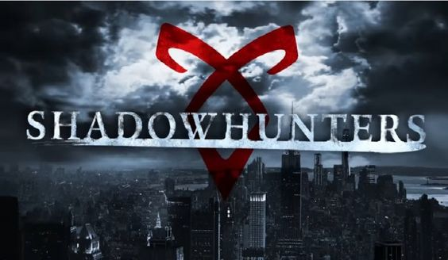

Os Caçadores de Sombras são uma raça de guerreiros que protegem o mundo humano das ameaças sobrenaturais, como demônios e outras criaturas do submundo (vampiros, lobisomens, feiticeiros, etc.). Eles são conhecidos como Nephilim, descendentes de humanos que possuem sangue de anjos, herdado do Anjo Raziel, que deu a eles habilidades e poderes especiais.
O principal dever dos Caçadores de Sombras é manter a ordem entre os humanos (chamados de "mundanos") e as criaturas sobrenaturais, além de impedir invasões demoníacas. Eles usam armas angelicais e runas (marcas mágicas gravadas em sua pele) para aprimorar suas habilidades físicas e mentais, como força, cura e invisibilidade.
O universo dos Caçadores de Sombras é apresentado na série de livros "Os Instrumentos Mortais", iniciada com o livro "Cidade dos Ossos", além de outras séries derivadas que exploram diferentes eras e personagens desse mundo rico e complexo. Através de personagens como Clary Fray, Jace Wayland e Magnus Bane, os livros combinam ação, romance e fantasia urbana, criando um universo fascinante e cheio de reviravoltas.
